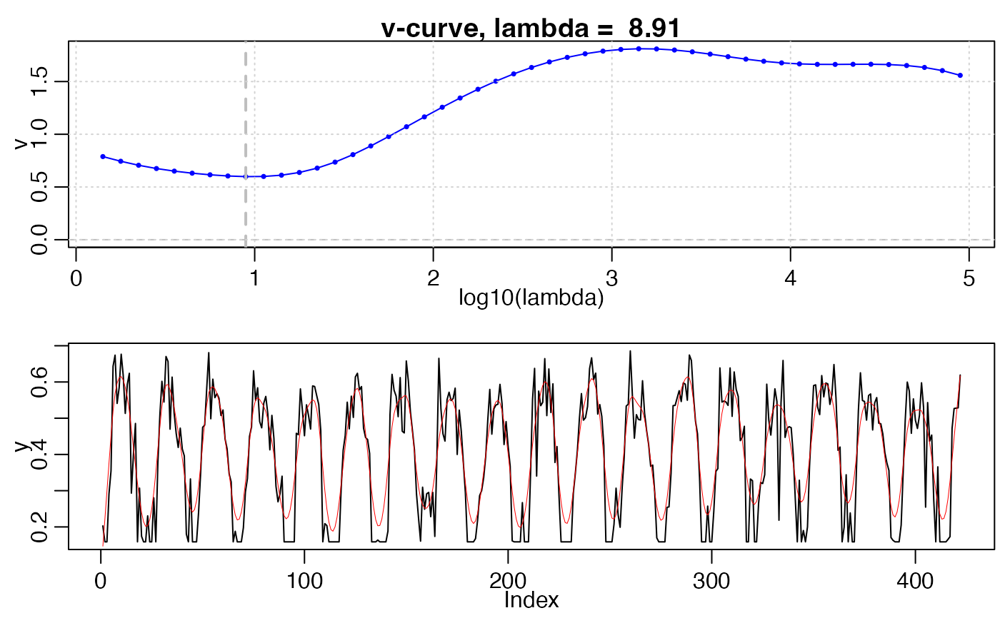

Weigthed Whittaker Smoother
smooth_wWHIT(
y,
w,
ylu,
nptperyear,
wFUN = wTSM,
iters = 1,
lambda = 15,
second = FALSE,
...
)Numeric vector, vegetation index time-series
(optional) Numeric vector, weights of y. If not specified,
weights of all NA values will be wmin, the others will be 1.0.
[low, high] of time-series y (curve fitting values are constrained
in the range of ylu.
Integer, number of images per year.
weights updating function, can be one of 'wTSM', 'wChen' and 'wBisquare'.
How many times curve fitting is implemented.
scaler or numeric vector, whittaker parameter.
If lambda = NULL, V-curve theory will be applied to retrieve the optimal lambda.
If multiple lambda provided (numeric vector), a list of the smoothing results
with the same length of lambda will be returned.
If true, in every iteration, Whittaker will be implemented twice to make sure curve fitting is smooth. If curve has been smoothed enough, it will not care about the second smooth. If no, the second one is just prepared for this situation. If lambda value has been optimized, second smoothing is unnecessary.
Additional parameters are passed to wFUN.
ws: weights of every iteration
zs: curve fittings of every iteration
Whittaker smoother of the second order difference is used!
Eilers, P.H.C., 2003. A perfect smoother. Anal. Chem. doi:10.1021/ac034173t
Frasso, G., Eilers, P.H.C., 2015. L- and V-curves for optimal smoothing. Stat. Modelling 15, 91-111. doi:10.1177/1471082X14549288 .
data("MOD13A1")
dt <- tidy_MOD13(MOD13A1$dt)
d <- dt[site == "AT-Neu", ]
l <- check_input(d$t, d$y, d$w, nptperyear=23)
r_wWHIT <- smooth_wWHIT(l$y, l$w, l$ylu, nptperyear = 23, iters = 2)
## Optimize `lambda` by V-curve theory
# (a) optimize manually
lambda_vcurve(l$y, l$w, plot = TRUE)

#> $lambda
#> [1] 8.912509
#>
#> $vcurve
#> lg_lambda v
#> 1: 0.15 0.7884322
#> 2: 0.25 0.7440285
#> 3: 0.35 0.7060863
#> 4: 0.45 0.6750716
#> 5: 0.55 0.6504026
#> 6: 0.65 0.6309297
#> 7: 0.75 0.6156428
#> 8: 0.85 0.6043848
#> 9: 0.95 0.5982948
#> 10: 1.05 0.5997682
#> 11: 1.15 0.6119080
#> 12: 1.25 0.6376537
#> 13: 1.35 0.6788940
#> 14: 1.45 0.7358517
#> 15: 1.55 0.8069273
#> 16: 1.65 0.8890535
#> 17: 1.75 0.9784316
#> 18: 1.85 1.0713447
#> 19: 1.95 1.1647063
#> 20: 2.05 1.2561877
#> 21: 2.15 1.3440350
#> 22: 2.25 1.4268234
#> 23: 2.35 1.5033215
#> 24: 2.45 1.5724867
#> 25: 2.55 1.6335145
#> 26: 2.65 1.6858644
#> 27: 2.75 1.7292301
#> 28: 2.85 1.7634668
#> 29: 2.95 1.7885161
#> 30: 3.05 1.8043706
#> 31: 3.15 1.8111132
#> 32: 3.25 1.8090421
#> 33: 3.35 1.7988609
#> 34: 3.45 1.7818688
#> 35: 3.55 1.7600540
#> 36: 3.65 1.7359930
#> 37: 3.75 1.7125168
#> 38: 3.85 1.6922088
#> 39: 3.95 1.6768950
#> 40: 4.05 1.6673013
#> 41: 4.15 1.6629799
#> 42: 4.25 1.6624863
#> 43: 4.35 1.6636941
#> 44: 4.45 1.6641116
#> 45: 4.55 1.6610975
#> 46: 4.65 1.6519428
#> 47: 4.75 1.6338408
#> 48: 4.85 1.6038159
#> 49: 4.95 1.5587223
#> lg_lambda v
#>
# (b) optimize automatically by setting `lambda = NULL` in smooth_wWHIT
r_wWHIT2 <- smooth_wWHIT(l$y, l$w, l$ylu, nptperyear = 23, iters = 2, lambda = NULL) #